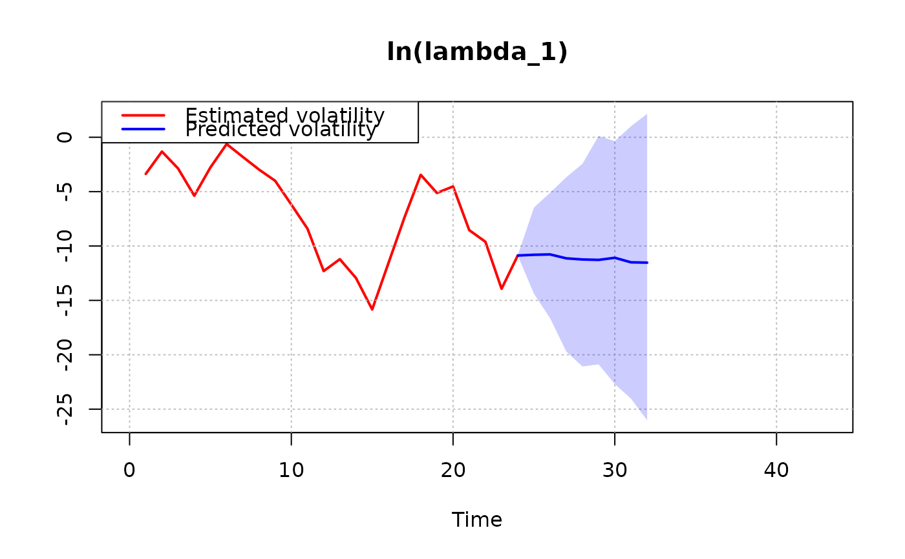
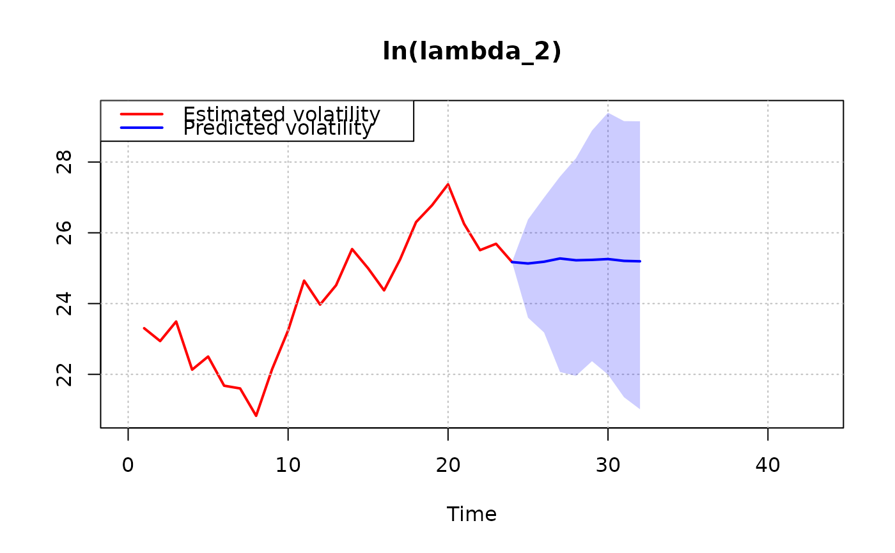

Plot stochastic volatility estimates and forecasts
Source:R/stochastic_volatility_plot.R
stochastic_volatility_plot.RdProduces time series plots of posterior stochastic volatility estimates
over the estimation sample together with predictive paths over the forecast
horizon for a fitted steady-state bvar object with stochastic volatility.
Usage
stochastic_volatility_plot(
x,
ci = 0.95,
vol = "log_lambda",
stat = "mean",
plot_idx = NULL,
xlim = NULL,
ylim = NULL
)Arguments
- x
A steady-state
bvarobject that has been passed throughfitwith stochastic volatility enabled.- ci
Numeric. Interval level. Default is
0.95.- vol
Character. Volatility representation:
"log_lambda"(default) or"sd".- stat
Character. Posterior summary statistic to use as point estimate:
"mean"(default) or"median".- plot_idx
Integer vector. Indices of variables to plot. If
NULL(default), all variables are plotted.- xlim
Numeric vector of length 2. Optional x-axis limits.
- ylim
Numeric vector of length 2. Optional y-axis limits.
Value
An invisible list with:
estimated: List of posterior summaries for the estimation sample:point: \(T \times k\) matrix of posterior point estimates (mean or median depending onstat)lower: \(T \times k\) matrix of lower credible boundsupper: \(T \times k\) matrix of upper credible bounds
predicted: List of posterior summaries for the forecast horizon:point: \((T+H) \times k\) matrix of predictive point estimates (mean or median depending onstat)lower: \((T+H) \times k\) matrix of lower bound of prediction intervalupper: \((T+H) \times k\) matrix of upper bound of prediction interval
Details
The function supports two volatility representations:
"log_lambda": log variances"sd": implied standard deviations
For each selected variable, the function plots the posterior point estimate path and credible bands over the estimation sample, and the predictive point estimate path and prediction intervals over the forecast horizon.
Examples
# \donttest{
yt <- matrix(rnorm(50), 25, 2)
bvar_obj <- bvar(data = yt)
bvar_obj <- setup(bvar_obj, p = 1, deterministic = "constant")
k <- bvar_obj$setup$k
n_free_params_A <- bvar_obj$setup$n_free_params_A
SV_priors <- list(
theta_A = rep(0, n_free_params_A),
Omega_A = diag(1000, n_free_params_A),
mu_log_lambda_1 = rep(0, k),
sigma2_log_lambda_1 = rep(1000, k),
alpha_phi = rep(5, k),
beta_phi = (rep(5, k) - 1) * rep(0.1, k)
)
bvar_obj <- priors(bvar_obj,
theta_Psi = rep(0, 2),
Omega_Psi = diag(0.1, 2, 2),
SV = TRUE,
SV_type = "RW",
SV_priors = SV_priors)
bvar_obj <- fit(bvar_obj,
H = 8,
d_pred = matrix(rep(1, 8)),
iter = 200,
warmup = 50,
chains = 1,
cores = 1,
verbose = FALSE)
#>
#> SAMPLING FOR MODEL 'steady_state_bvar_RW_stochastic_volatility' NOW (CHAIN 1).
#> Chain 1:
#> Chain 1: Gradient evaluation took 0.000145 seconds
#> Chain 1: 1000 transitions using 10 leapfrog steps per transition would take 1.45 seconds.
#> Chain 1: Adjust your expectations accordingly!
#> Chain 1:
#> Chain 1:
#> Chain 1: WARNING: There aren't enough warmup iterations to fit the
#> Chain 1: three stages of adaptation as currently configured.
#> Chain 1: Reducing each adaptation stage to 15%/75%/10% of
#> Chain 1: the given number of warmup iterations:
#> Chain 1: init_buffer = 7
#> Chain 1: adapt_window = 38
#> Chain 1: term_buffer = 5
#> Chain 1:
#> Chain 1: Iteration: 1 / 200 [ 0%] (Warmup)
#> Chain 1: Iteration: 20 / 200 [ 10%] (Warmup)
#> Chain 1: Iteration: 40 / 200 [ 20%] (Warmup)
#> Chain 1: Iteration: 51 / 200 [ 25%] (Sampling)
#> Chain 1: Iteration: 70 / 200 [ 35%] (Sampling)
#> Chain 1: Iteration: 90 / 200 [ 45%] (Sampling)
#> Chain 1: Iteration: 110 / 200 [ 55%] (Sampling)
#> Chain 1: Iteration: 130 / 200 [ 65%] (Sampling)
#> Chain 1: Iteration: 150 / 200 [ 75%] (Sampling)
#> Chain 1: Iteration: 170 / 200 [ 85%] (Sampling)
#> Chain 1: Iteration: 190 / 200 [ 95%] (Sampling)
#> Chain 1: Iteration: 200 / 200 [100%] (Sampling)
#> Chain 1:
#> Chain 1: Elapsed Time: 0.034 seconds (Warm-up)
#> Chain 1: 1.869 seconds (Sampling)
#> Chain 1: 1.903 seconds (Total)
#> Chain 1:
#> Warning: There were 1 transitions after warmup that exceeded the maximum treedepth. Increase max_treedepth above 10. See
#> https://mc-stan.org/misc/warnings.html#maximum-treedepth-exceeded
#> Warning: There were 1 chains where the estimated Bayesian Fraction of Missing Information was low. See
#> https://mc-stan.org/misc/warnings.html#bfmi-low
#> Warning: Examine the pairs() plot to diagnose sampling problems
#> Warning: The largest R-hat is NA, indicating chains have not mixed.
#> Running the chains for more iterations may help. See
#> https://mc-stan.org/misc/warnings.html#r-hat
#> Warning: Bulk Effective Samples Size (ESS) is too low, indicating posterior means and medians may be unreliable.
#> Running the chains for more iterations may help. See
#> https://mc-stan.org/misc/warnings.html#bulk-ess
#> Warning: Tail Effective Samples Size (ESS) is too low, indicating posterior variances and tail quantiles may be unreliable.
#> Running the chains for more iterations may help. See
#> https://mc-stan.org/misc/warnings.html#tail-ess
stochastic_volatility_plot(bvar_obj, ci = 0.95)


# }